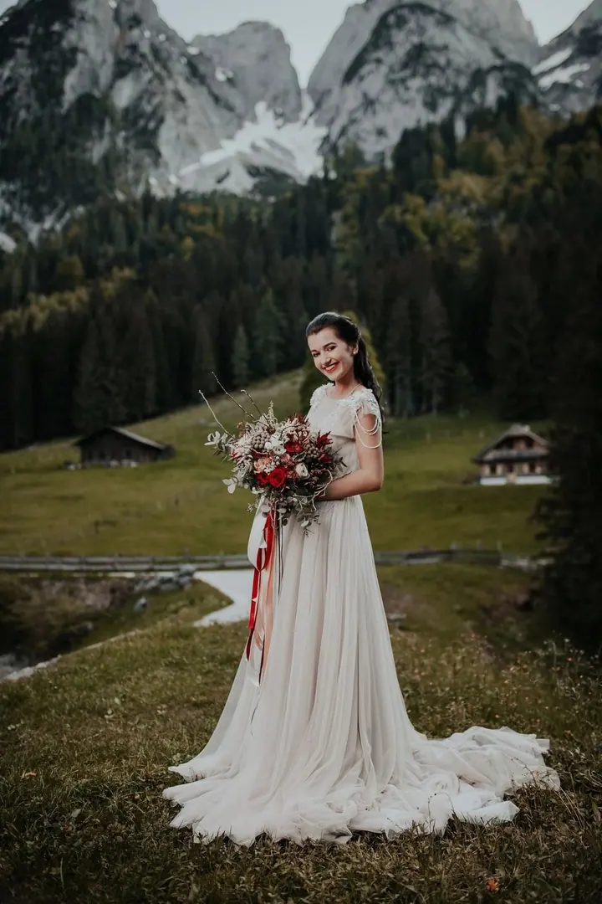
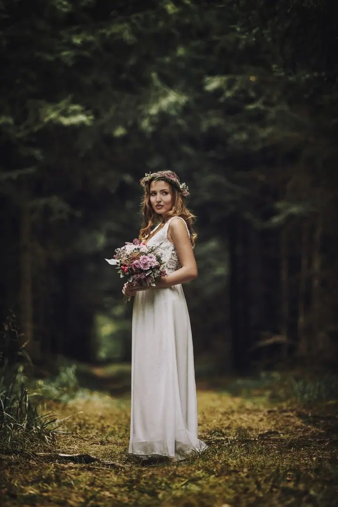
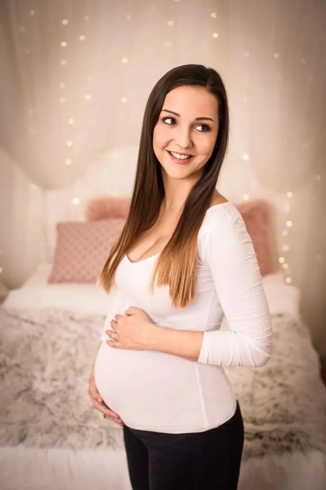

jedna
Svatební fotografie a video
Svatby fotím a natáčím po celé ČR i mimo ni, na přání i s dronovými záběry. Fotky a videoklip předávám v dárkovém balení na USB.

Svatební fotograf a kameraman · Poděbrady, Nymburk, Kolín

Jmenuji se Michal Vinecký a jsem fotograf a kameraman z Poděbrad. Svatby fotím a natáčím po celé republice i za hranicemi. V našem ateliéru na Riegrově náměstí vznikají těhotenské, párové a vánoční fotografie.
Více o mně
Co fotím
jedna
Svatby fotím a natáčím po celé ČR i mimo ni, na přání i s dronovými záběry. Fotky a videoklip předávám v dárkovém balení na USB.
dvě
Focení v ateliéru, v přírodě nebo u vás doma. Vybrat si můžete z balíčků BASIC, STANDARD a EXCLUSIVE s upravenými digitálními i tištěnými fotografiemi.
tři
Fotíme v lese, na louce, v parku, na poli nebo v ateliéru. Vánoční focení připravujeme od začátku listopadu a každý rok v jiné scéně.
Narozeninová oslava u nás v ateliéru včetně výzdoby a dekorací. Fotky předáme v dárkovém balení a na přání vyrobíme i fotoknihu.
Svatba v horách, v lese nebo za humny

Za objektivem
Svatbu u mě můžete mít na fotkách, ve videoklipu nebo obojí, s dronovými záběry. Fotím na Kutnohorsku, Kolínsku, Nymbursku a kolem Lysé nad Labem, ale za svatebními páry rád vyrazím po celé ČR i do zahraničí. Na začátku se potkáme nezávazně v ateliéru nebo na místě, které si vyberete, a předám vám pár postřehů a tipů z praxe.
Rodinné focení plánuji podle ročního období. V lednu a únoru vyrážíme do zasněžené přírody, na přelomu dubna a května do rozkvetlé, v létě nejraději mezi 17. a 20. hodinou a na podzim na louky a do lesa. Od začátku listopadu fotíme v ateliéru vánoční scénu, každý rok jinou.
Fotky z balíčků dostanete upravené v digitální podobě i vytištěné. Svatební fotky a videoklip předávám v dárkovém balení na USB, aby se dobře dávaly i jako dárek.
Michal
Termín a podrobnosti mi pošlete e-mailem. U svateb vám pošlu konkrétní cenovou nabídku foto i video.
Potkáme se v ateliéru v Poděbradech nebo na místě, které si vyberete. Probereme představy a předám vám tipy z praxe.
Fotíme v přírodě, u vás doma nebo v ateliéru, u svateb tam, kde se váš den odehrává, klidně i s dronem.
Z rodinného focení si vyberete fotky do balíčku a do 4–5 týdnů je máte upravené a vytištěné. Svatby předávám v dárkovém balení na USB.
Portfolio
Otázky
Balíček BASIC s 10 fotkami stojí 3 500 Kč, STANDARD s 20 fotkami 4 500 Kč a EXCLUSIVE s 30 fotkami 5 500 Kč. V ceně jsou upravené digitální i tištěné fotografie 13 × 19 cm.
Do 4–5 týdnů od vašeho finálního výběru. Když spěcháte, objednávku vyřídím expresně do 10 dnů za 3 000 Kč.
Ceník svatebních fotek, videa a dronových záběrů vám pošlu na vyžádání e-mailem podle rozsahu a místa svatby.
Rozkvetlá příroda je nejhezčí koncem dubna a začátkem května, v létě fotíme dopoledne nebo mezi 17. a 20. hodinou, na podzim od konce září do poloviny října.